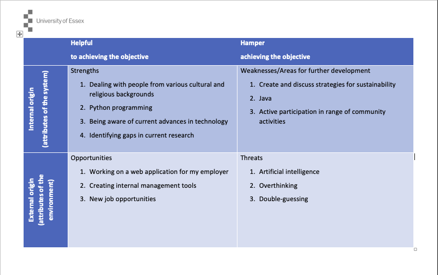
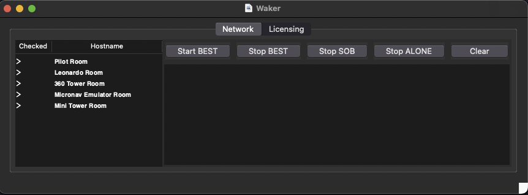
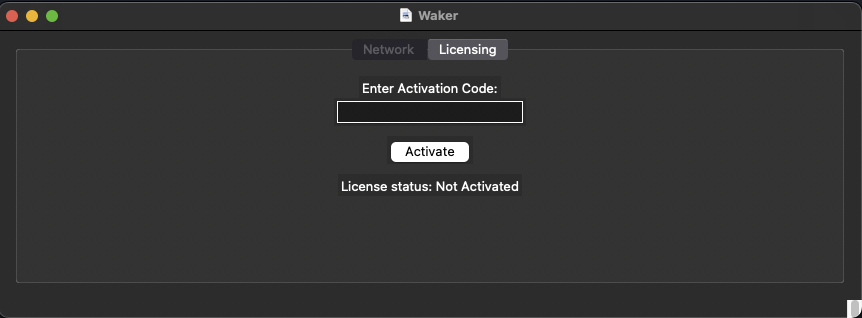

Unit 11: Artefacts
Unit 11 Reading
As in every unit, we were tasked to read several websites/papers, specifically on the topic of ePortfolios in educational and professional environments. I had some thoughts whilst reading through some of the papers, so I decided to record them below. This will also be part of my final reflection.
Notes
In her article titled “Employer Perceptions of an Engineering Student’s Electronic Portfolio”, Weber (2018) speaks about a gap between the skills students learn at college and the needs of an employer. I agree with said statement, however, I would add that there are fundamental skills most students lack in terms of knowledge they will require in the future. For instance, I am not aware of any student in my generation, whether in the German or the British system, who learns how to file taxes, how the stock market works, or the importance of preparing for one's retirement, to name a few.
Furthermore, based on personal experience, I do find ePortfolios to be a valuable tool for self-reflection and evaluation. Creating and updating such a portfolio is a skill that is acquired through consistency and time. Sometimes, however, I find that the grading of such portfolios defeats the purpose altogether. A portfolio should be a place for a student to reflect honestly and in a way which befits them, similarly to a diary - at least to a certain extent (Hoven et al., 2022). Once grading is introduced, the student may feel compelled to say specific things and omit others. For instance, Miller & Morgaine (2009) argue that faculties and institutions can use student ePortfolios to improve their course material. However, I find it doubtful whether students reflect their true opinions on course material, since their portfolios are not anonymous and they rely on their tutors for grades. Furthermore, the additional work of creating and maintaining an ePortfolio may be seen as a distraction, or be overwhelming to some students (Händel et al., 2018).
References
- Weber, K. (2018) Employer Perceptions of an Engineering Student’s Electronic Portfolio. International Journal of ePortfolio 8(1): 57-71. Available from: https://files.eric.ed.gov/fulltext/EJ1177608.pdf [Accessed 19 May 2024].
- Hoven, D., Prokopetz, R. Z., Al-Tawil, R. & Walsh, P. (2022) ‘Communities of Learning and Support through ePortfolios: Student Empowerment, and Lifelong Learning for Students and Teachers’. Pan-Commonwealth Forum 10 (PCF10), 2022. Calgary, Canada. 14-16 September 2022. DOI: https://doi.org/10.56059/pcf10.1329 [Accessed 19 May 2024].
- Miller, R. & Morgaine, W. (2009) The Benefits of E-portfolios for Students and Faculty in Their Own Words. Peer Review 11(1): 8-12. Available from: https://ulm.edu/webguide/faculty/pdf/Benefits-Of-eFolios-For-Students-AndFaculty-In-Their-Own-Words.pdf [Accessed 19 May 2024].
- Händel, M., Wimmer, B. & Ziegler, A. (2018) E-portfolio use and its effects on exam performance - a field of study. Studies in Higher Education 45(2): 258-270. DOI: https://doi.org/10.1080/03075079.2018.1510388 [Accessed 19 May 2024].
Unit 11 Seminar Preparation
Professional Skills Matrix
Looking at the matrix compared to what I have been studying over the past 1 1/2 years, I find that the study material we were given and taught is well reflected on the matrix, and covers almost all parts of it. Besides Java, everything mentioned on the matrix has been taught in some way, especially Python, SQL, Ethics, Codes of Conduct, Team Work, Feedback, working in a professional and scientfic environment, etc. Looking at it now, I feel that this course has prepared us well to continue our professional careers on a completely new level.
When looking through the matrix in terms of my accomplishments, I refrained from using the 'Expert' rating for most of the points, because I think that there is always room for improvement. However, for some points I did select 'Expert', based on my educational and professional background. For other points where I feel that I did not have enough exposure, I selected 'Aware' as the rating.
SWOT Analysis
Action Plan
- Pursue new opportunities
- Remain aware of current developments in artificial intelligence, both as an end-user and a developer to stay "ahead of the curve"
- Not worry about things which are outside of my control
- Be confident in my experience, work, and performance
Personal and Professional Influence on Skills Matrix & Action Plan
As I have mentioned in a few places in the professional skills matrix, my occupation as a simulator engineer definitely influenced my ratings on the skills matrix. For instance, because I work in a multi-national company with people of various cultural and religious backgrounds, opinions can often vary, or people may interpret words in different, often contradictory ways. Because I have lived abroad for 13 years and worked for my current employer for 6 years, I have learned how to deal with people in a manner that avoids offense and misinterpretation.
Another example would be my skills in creating documents to aid with my communication. I write business-reated emails every day, have conversations with our end-users on which simulations they are planning to do and how they want to conduct them, which I then have to "translate" from high-level requirements to detailed technical specifications. An additional example of where my profession influenced the skill matrix would be "Keep current wiht tools of the industry, as well as emerging technology." My current employer pride themselves as having the biggest and most advanced air traffic control simulator(s) in the world, which in turn leads me to be partially responsible for updating it and "refreshing" the technology whenever technology advances.
Similarly, I am very interested in artificial intelligence and machine learning, cybersecurity, and blockchain technology. Due to this personal interest, I keep up to date with emerging technology and related news. Furthermore, I have used the skills gained during my studies and personal development to create various programs to automate tasks, or at least to make them easier for the end-user. For instance, I created an application for my workplace that allows us to start, stop, and restart software on roughly 200 PCs via the network. I have also added several security features such as encryption and license code validation. If the user does not have a valid license key, the software will not work. After the license expires, the user will also lose access to the software.
 Module Reflection
It is impossible to choose just one module in terms of the impact it had on me. Overall, I would select four modules which had the greatest impact:
- Object Oriented Programming
- Secure Software Design
- Information Security Management
- Network Security
Object Oriented Programming
I have chosen Object Oriented Programming as one of the modules with the greates influence on me because it exposed me to the concept of object orientation for the first time in an academic setting. Furthermore, this module challenged me to improve and fine-tune my Python skills, which has ultimately led to some great projects within the module, in other modules, and outside of university. I also thoroughly enjoyed the teaching-style of the tutor who taught the module.
Secure Software Development
Secure Software Development made the list because it was the first time I had to participate in a team project as part of my studies with the University of Essex. I was quite nervous at first and did not know what to expect, especially given the fact that there are no opportunities to meet face-to-face, meaning I had never actually met my team mates before. Additionally, we also all live in different countries, hence the timezones would be a major inconvenience. However, this module, more than any other, taught me not to "sweat the small stuff" and not to worry too much. Everything worked out well, and it gave me much needed confidence for future team projects. Furthermore, I appreciated the input of the tutor in this module, because she ensured to spend time with every team, answer questions, and keep us at our best.
Information Security Management
I really appreciated the study material in this unit because I learned a lot about risk assessments and risk mitigation - scoring systems like STRIDE and DREAD, MITRE, etc. These are very valuable especially now as I am moving into my thesis project. During my research proposal presentation I noticed I was refering a lot to what I had learned in this particular module.
Network Security
The Network Security module ignited a passion in me which was previously hidden. I learned a lot about security and penetration testing. Studying this module inspired me to look into Kali Linux again, and successfully conduct some experimentation on my own WiFi network. Using the tools taught in this module allowed me to test some of my companies websites to discover vulnerabilities. I also used the knowledge to create a tool that allows me to start, stop, and restart software on around 200 PCs via the network. Furthermore, it helped me understand a lot of aspects about networks and networking which I previously did not understand. I was not exposed much to networking before, so there was a lot I did not fully grasp before studying this module.